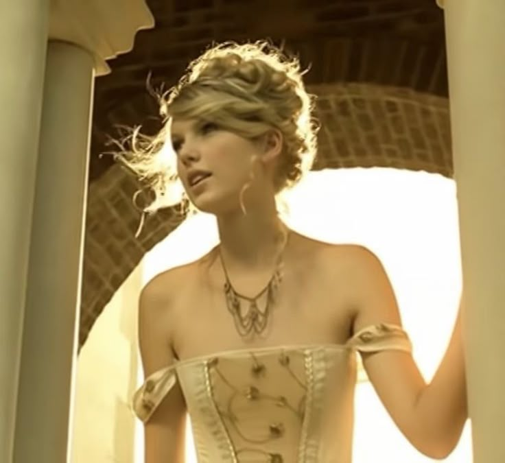
Love Story (Fearless album)
- Country-pop
- Country-pop
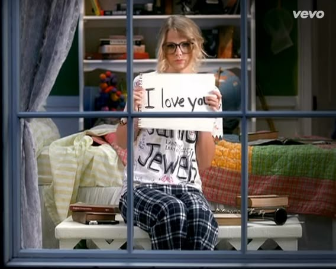
You belong with me (Fearless album)
- Country-pop / Pop-rock
- Country-pop / Pop-rock
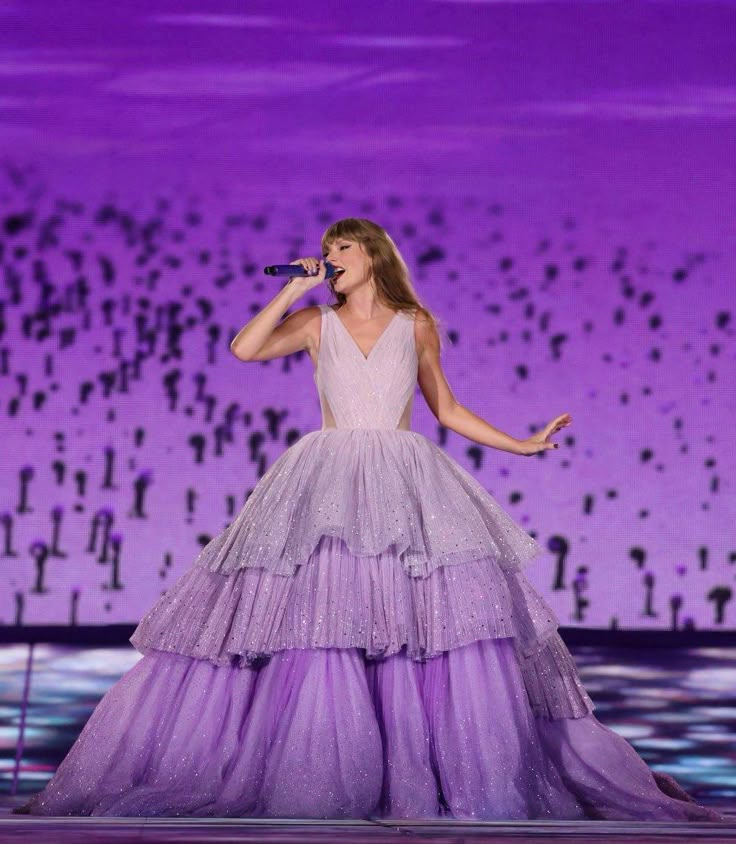
Enchanted (Speak Now album)
- Power-pop / pop-rock
- Power-pop / pop-rock
Everything has changed (Red album)
- Folk-pop / country-pop
- Folk-pop / country-pop

Blank Space (1989 album)
- Electropop
- Electropop
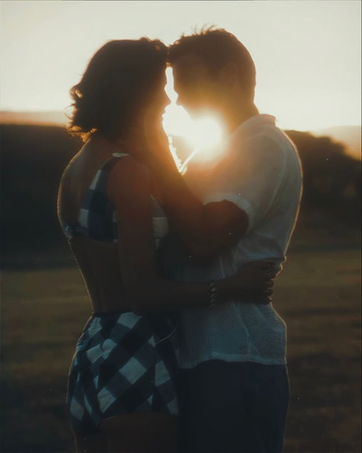
Wildest dreams (1989 album)
- Dream-pop / synth-pop
- Dream-pop / synth-pop

This love (1989 album)
- Soft rock / dream-pop
- Soft rock / dream-pop

You are in love (1989 album)
- Synth-pop / dream-pop
- Synth-pop / dream-pop
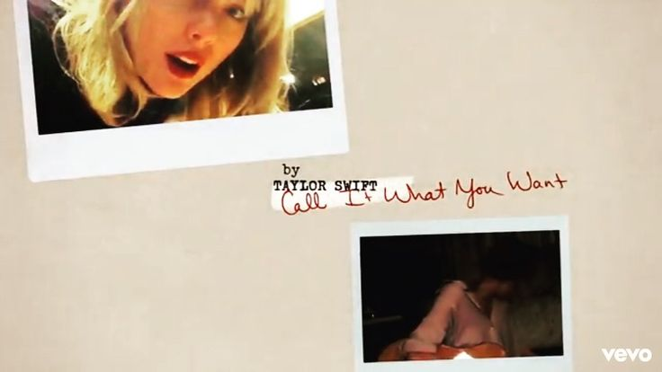
Call it what you want it (Reputation album)
- Dreamy electropop / synth-pop
- Dreamy electropop / synth-pop
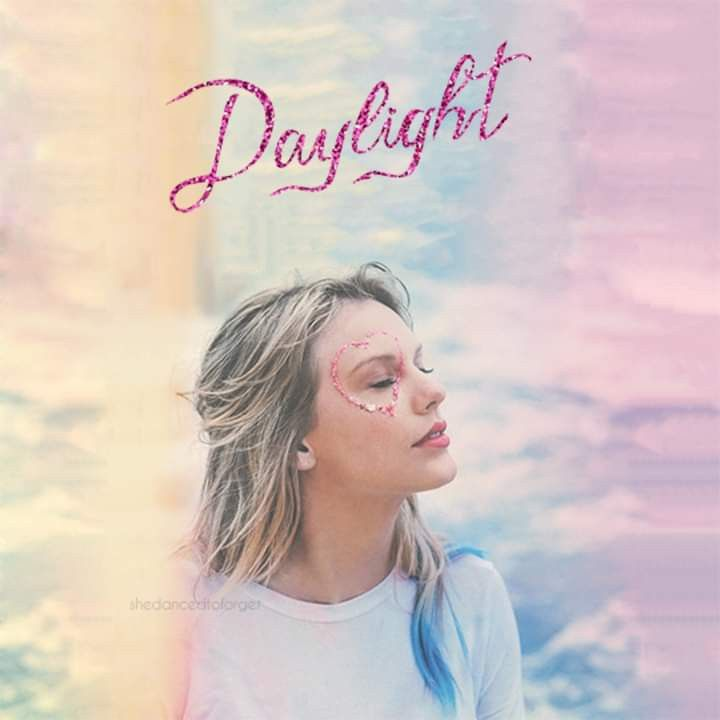
Daylight (Lover album)
- Pop / soft pop
- Pop / soft pop
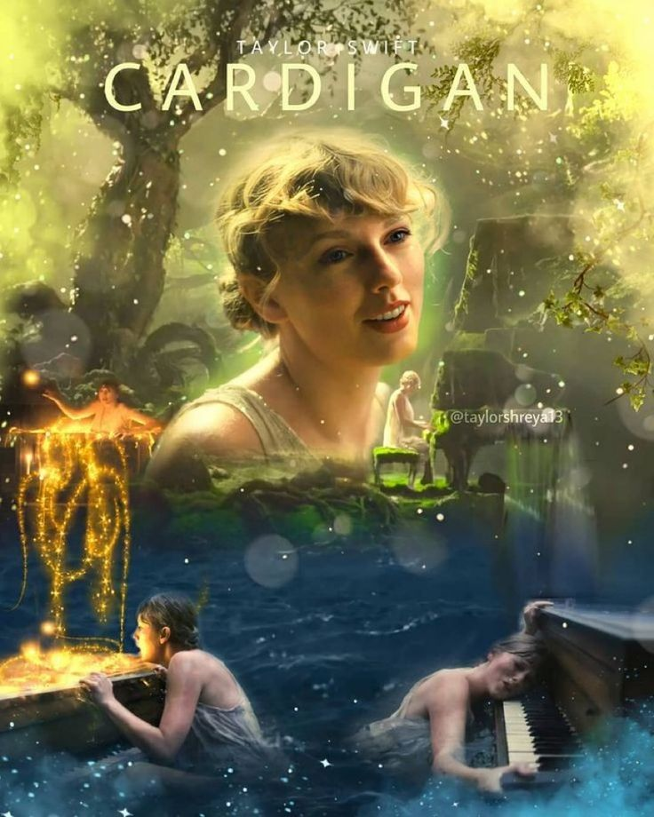
Cardigan (Folklore album)
- Indie-folk / alternative
- Indie-folk / alternative
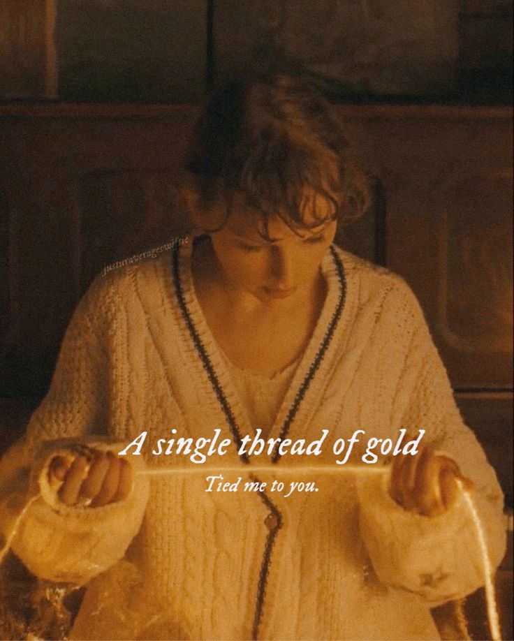
Willow (Folklore album)
- Indie-folk / alternative
- Indie-folk / alternative
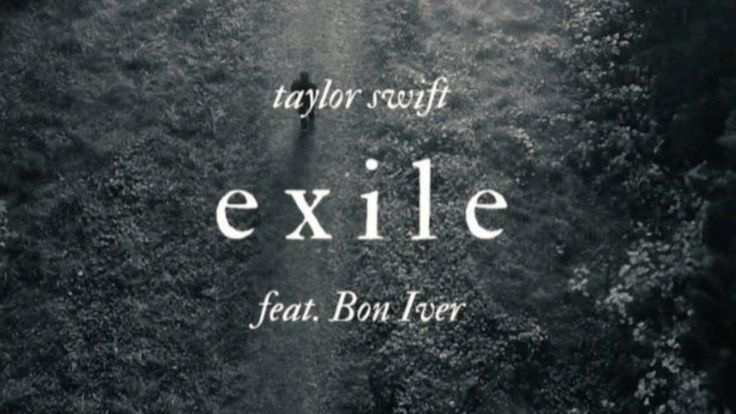
Exile (Folklore album)
- Indie-folk / alternative
- Indie-folk / alternative
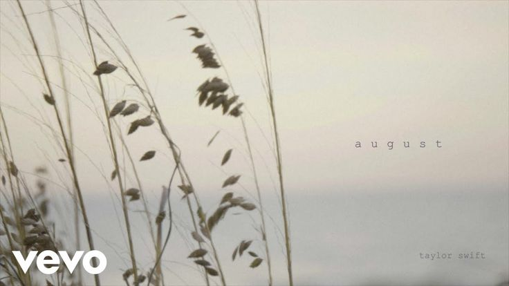
August (Folklore album)
- Indie-pop / dream-pop
- Indie-pop / dream-pop

All too well (10 min version)(Red Taylor's version album)
- Folk-rock / country-folk
- Folk-rock / country-folk

You are on your own kid (Midnights)
- Synth-pop / alternative pop
- Synth-pop / alternative pop
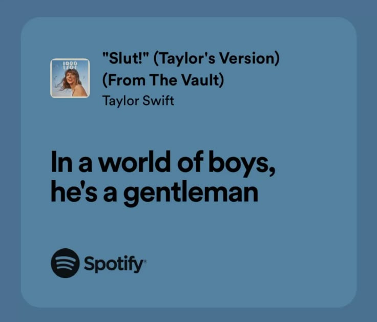
Slut (1989 Taylor's version album)
- Dream-pop / synth-pop
- Dream-pop / synth-pop

You are losing me (Midnights album : The Late Night Edition)
- Synth-pop / emotional pop
- Synth-pop / emotional pop

Say don't go (1989 Taylor's Version album - Vault)
- Synth-pop / pop
- Synth-pop / pop
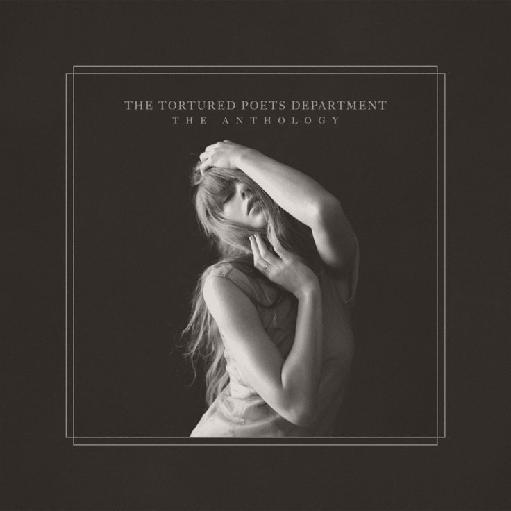
Imgonnagetyouback (The Torturted Poets Department)
- Electro-pop / synth-pop
- Electro-pop / synth-pop

Fortnight (The Torturted Poets Department)
- Electro-pop / synth-pop
- Electro-pop / synth-pop
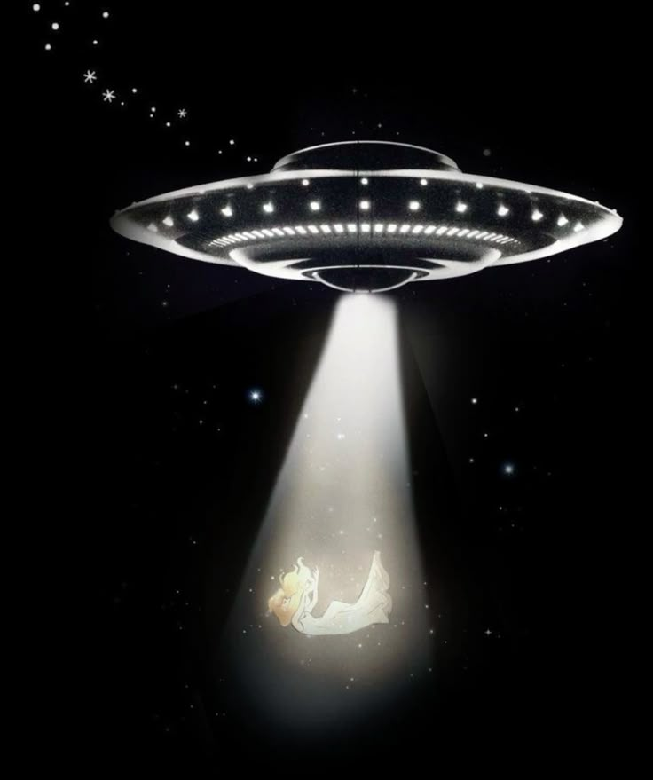
Down bad (The Torturted Poets Department)
- Synth-pop / electro-pop
- Synth-pop / electro-pop
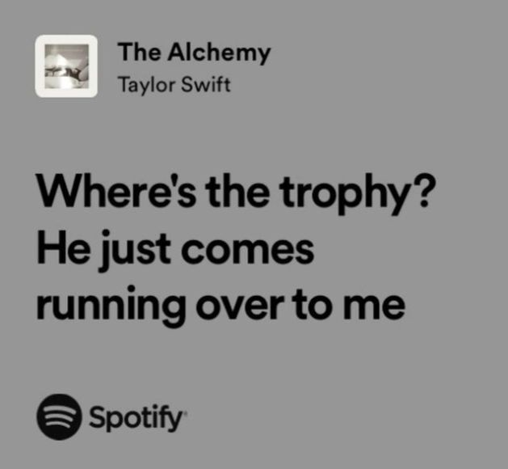
The alchemy (The Torturted Poets Department)
- Pop-rock / alternative pop
- Pop-rock / alternative pop
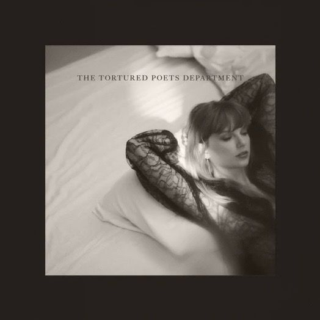
My boy only breaks his favourite toys (The Torturted Poets Department)
- Alternative pop / indie-pop
- Alternative pop / indie-pop